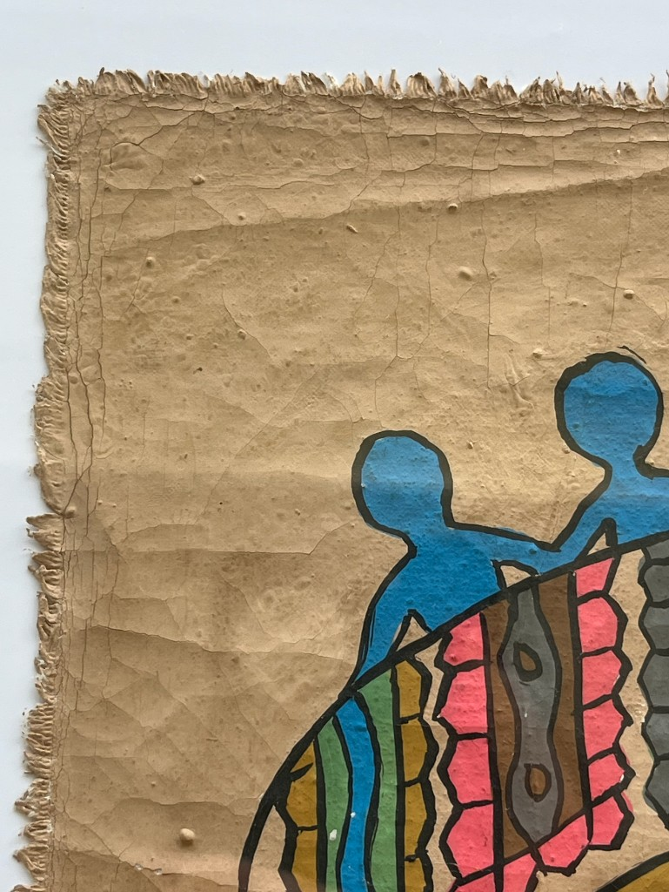

[ Pattern ]
S O P H I E R U S H T O N
[ Studio ]
Inspiration

Textiles can hold entire histories within them. Across many cultures, pattern becomes a language through which spirituality, protection, ancestry, and collective memory are carried from one generation to the next.
On a recent trip to Benin, Ouidah, the cradle of Vodun culture in West Africa, I brought home this original Fon artwork of an Egungun garment. Having had the opportunity to witness an Egungun ceremony while I was there, I began to understand how deeply textiles, movement, ritual, and memory are connected within Yorùbá and Fon traditions.
In Egungun masquerades, layered garments of appliqué, embroidery, fringe, and cowries transform the wearer into a living embodiment of ancestry and a portal through which ancestral spirits become present. As the textiles move, the patterns themselves seem to come alive, becoming rhythm, ritual, and spiritual force. These incredible garments and patterns are not simply decorative, but form a visual system and symbolic language through which history, spirituality, status, and cultural memory are carried forward across generations.
The painting echoes many of these same traditions. The white motifs represent cowrie shells, symbols long associated across Benin and broader Yorùbá-Fon culture with prosperity, protection, fertility, and sacred power. The geometric forms also draw on the royal Fon appliqué traditions of Abomey, from the former Kingdom of Dahomey, where cloth functioned as both storytelling device and cultural archive.
I feel incredibly fortunate to have experienced such a deeply rooted and culturally rich tradition firsthand. A huge thank you to @louise_fenton for bringing us there and for generously sharing her knowledge and research throughout the experience.